FMOD Studio User Manual 1.10
Whether you're a game sound designer, a composer, or a game audio professional in the making: Welcome to FMOD Studio, an intuitive and flexible game audio middleware solution. With FMOD Studio, you can easily:
You can navigate to more information on any of these topics by using the table of contents on the right side of this page.
If you're new to FMOD Studio, you should start with the FMOD Studio Concepts chapter, which introduces the core ideas and tools that you'll need to begin making audio content for your game.
If you've been using FMOD Studio for a while and want to learn about the more advanced things you can do with it, the chapters listed in the table of contents provide in-depth explanations of things you can do with FMOD Studio.
Finally, if you're already an experienced user of FMOD Studio but need detailed information about a specific topic, the best place to start is the Glossary. There, you'll find definitions of many common FMOD Studio terms, along with references to related terms and documentation.
For all other information, including licensing and support, please head to www.fmod.com
We hope you enjoy discovering what FMOD Studio can do, and can't wait to hear what you create with it.
Welcome to FMOD Studio 1.10. This release introduces a host of key improvements, making it even easier for you to create rich and dynamic audio for your game. We're excited to see what you create with these great new additions!
With Studio 1.10 comes a brand new workflow for managing parameters and effects in your project.
Preset parameters can be created at the project level. Once you've created a preset parameter, you can create parameters that reference it in any event by adding parameter sheets, automation curves, and trigger conditions based on that preset parameter. Every parameter that references a preset parameter can have a unique current value, but otherwise shares all the preset parameter's properties and settings.
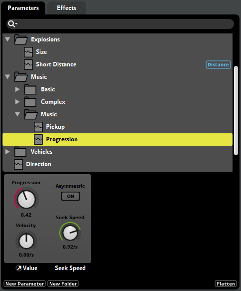
This is very useful when you have certain parameters that are identical across a number of events.
Preset effects work much like preset parameters. You can create a single preset effect, and then create effects based on that preset throughout your project's events. Each effect based on a preset shares property values with the preset effect, so you only have to modify a preset once to update all the effects based on it.
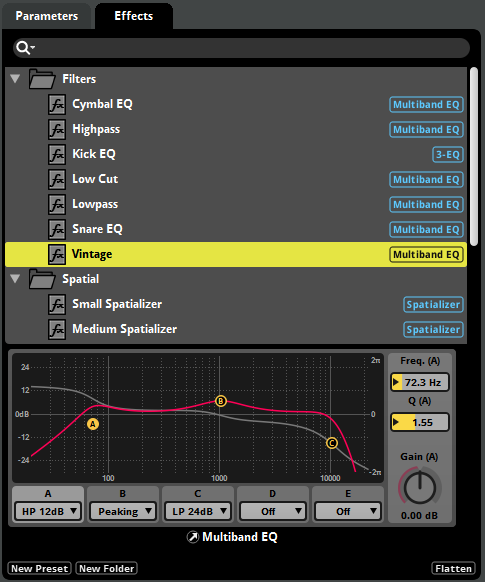
You can add an effect based on a preset to a signal chain via the presets context menu, or by dragging and dropping an preset effect from the presets browser window. You can also right click an existing effect and convert it to a preset.
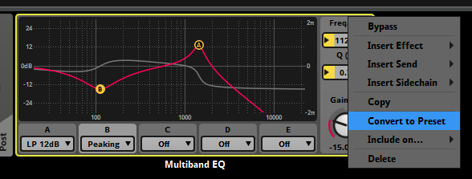
By automating preset effects, you can give them complex parameter-based behavior without having to recreate the automation in multiple events.
The automation curves of properties can now be viewed directly in the deck.
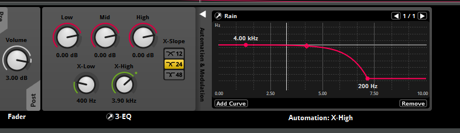
Automation tracks can also be displayed in the editor view, as required.
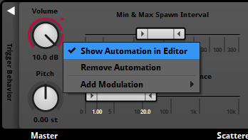
When you add an automated preset effect to an event, all parameters referenced by the effect are automatically added to the event. These added parameters show up as dials in the transport bar, but not as parameter sheets in the event, making events easier to navigate.
In conjunction with default events, presets greatly improve project scalability and maintainability. Furthermore, using presets can significantly reduce bank size.
Studio 1.10 uses a completely new live update implementation, greatly improving the live update experience. These changes have also significantly reduced the size of the FMOD binaries, lowering the memory footprint of your game.
It is now possible to add audio files to events while connected to live update. This means that you can completely re-author an event while connected to live update, including adding or removing audio file content.
You no longer have to rebuild your banks to hear your changes in-game. Changes are automatically synced whenever you start a live update session, dramatically shortening iteration time. This feature can be disabled by unchecking the "Sync changes upon connecting to game" checkbox in the 'Interface' tab of the 'Preferences' window.
Buses active within the mixer are now displayed with an orange highlight. This makes it clear when a bus is inactive and has been optimized away (typically due to having no event instances created within its hierarchy.)
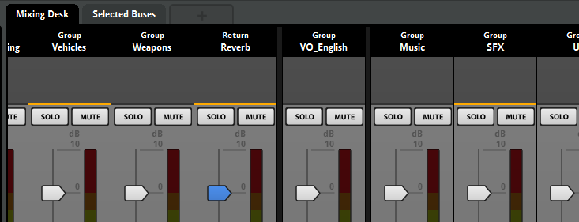
It is also now possible to see the effective value of properties within the mixer, as indicated by orange circles on various property controls.
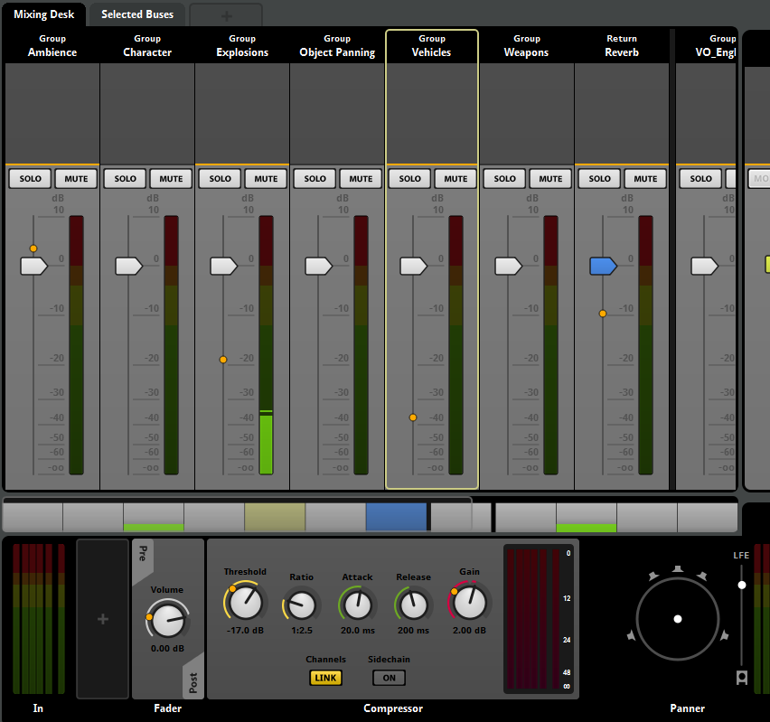
The effective value is the net result of snapshots active within the game. This makes it much easier to observe the effect of snapshots.
Both tracks and effects can now be included or excluded from the build on a per platform basis. This allows you to tailor your project's performance for each individual platform your game is targeting.
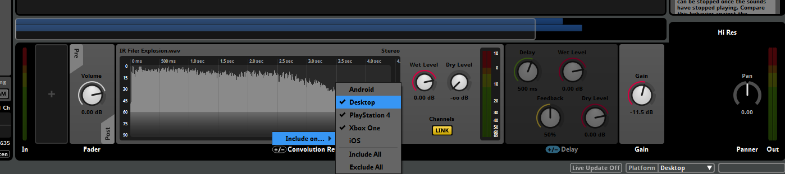
When building a project, any audio files on tracks excluded from that project are omitted from the banks. By excluding assets on a per event basis, banks sizes can be adjusted to match the target platform.
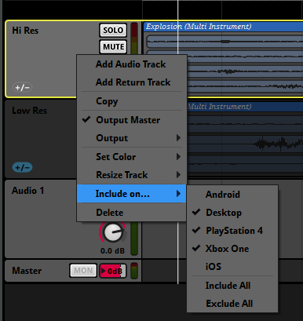
To further round out our spatial audio pipeline, we've made a number of changes to assist in the propagation of height enabled signals.
The Surround 7.1.4 channel format has been added, which supports four ceiling speakers. To allow sending signal to the ceiling speakers, panners can pan signals from the ground to the ceiling, or vice versa, using the height property.
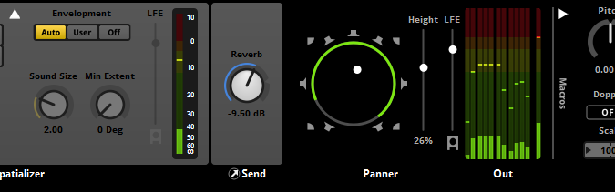
To output Surround 7.1.4, the project surround speaker format should still be set to Surround 7.1, while the master bus output format should be Surround 7.1.4. To audition a 7.1.4 signal, a height-based output mode should be selected.
Channel formats can now be set to specific surround formats at the input and output of each bus. This allows for finer control of formats. Signals with channel counts higher than the active platform format are now permitted to pass through the mix.
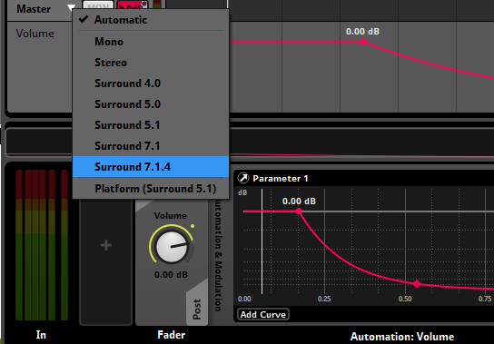
Windows Sonic support has been added, allowing you to audition height-based panning. This can be enabled from the 'Audio' tab of the 'Preferences' window.
Event auditioning has been improved to more closely reflect how event playback works in-game.
Transport controls have been updated as follows:
Changes to transport keyboard shortcuts have also been made to reflect the new behaviors:
Finally, an updated timecode display makes it easier to observe the current playback state.
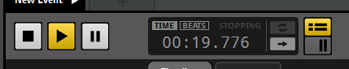
We've also added tabs to the event editor window. This makes it possible to audition multiple events within a single window.
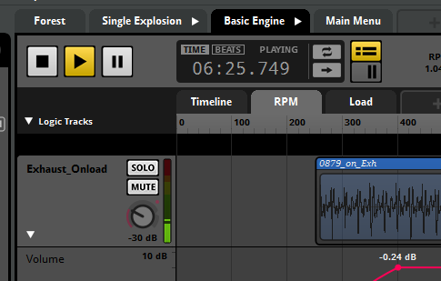
The scatterer instrument now contains a spawn rate property, allowing you to scale the spawn interval by a percentage. Spawn rate can be automated, allowing you to adjust the spawn interval dynamically.
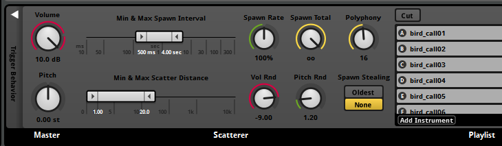
You can now set the pitch of group buses in the mixer window. Changing this property scales the pitch of events routed into a bus. Bus pitch can also be scoped into snapshots.
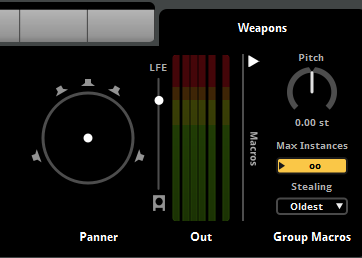
Parameters now have a velocity property. Applying velocity causes the parameter to move in a particular direction on its own, without requiring API input. This can be handy for parameters that need to automatically reset or advance to a particular value.
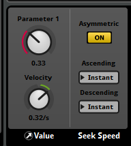
You may also notice that the hold button from the parameter deck has been moved to the parameter dialog (displayed when you add or edit parameters).
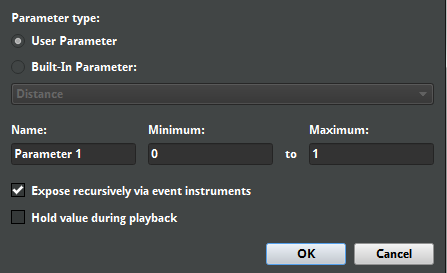
Additionally, the new "Expose recursively via event instruments" checkbox allows you to automatically expose parameters used by event instruments to their parent events.
A simple gain effect has been added. When saved as a preset, the gain effect can be used to define a custom distance attenuation curve that can then be shared across multiple events.
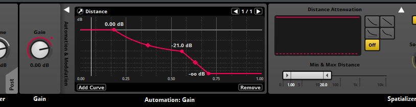
It is now possible to customize how plug-ins are displayed in the user interface by using the scripting API. See the Plug-in Scripting API for further details.
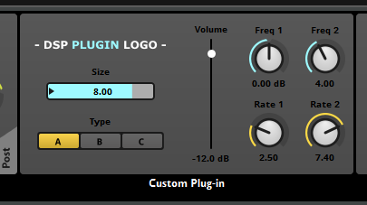
A number of new scripting functions have been added. These include the studio.system.require() function, which allows script files to be exposed as a module, and the studio.project.model.document() function, which allows a complete list of available model types to be displayed.
Changes have also been made to the way parameter cursor positions are set via scripting. They no longer use the cursorPosition property. Please see the Event.getCursorPosition() and Event.setCursorPosition() functions for further details.
We've completely replaced our user manual with one that is easier to read and browse (the one you're currently reading!). The new manual contains all-new content, with succinct and up-to-date descriptions of concepts and a glossary of common terms.
In addition to the new features listed, we've made a number of additional stability and usability enhancements. Please see the revision notes for further details.